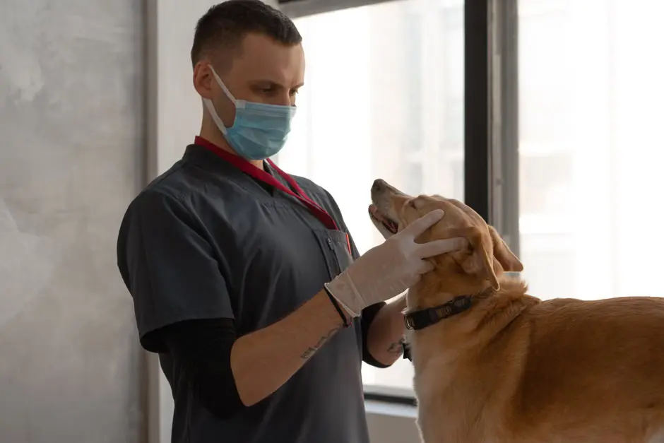
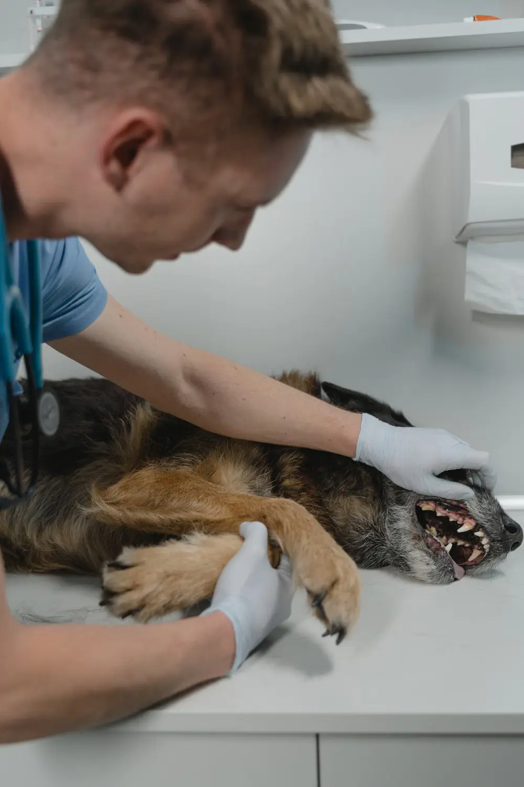
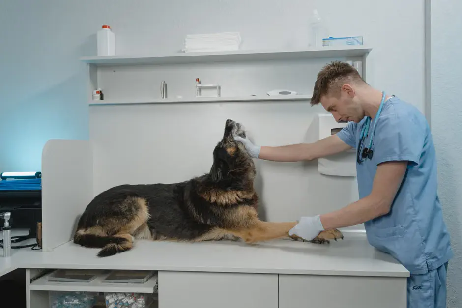
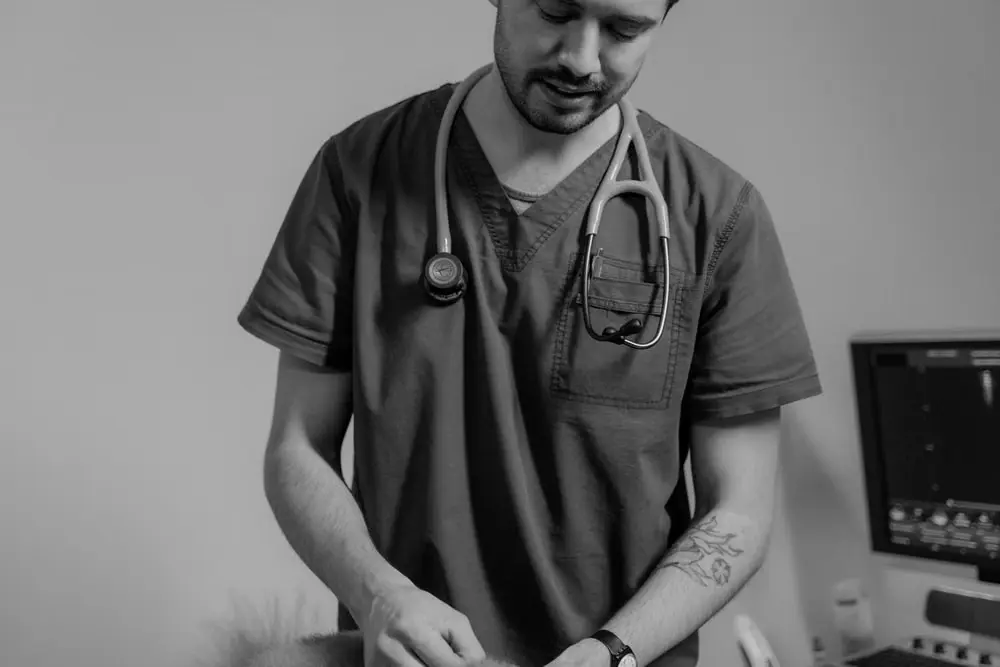
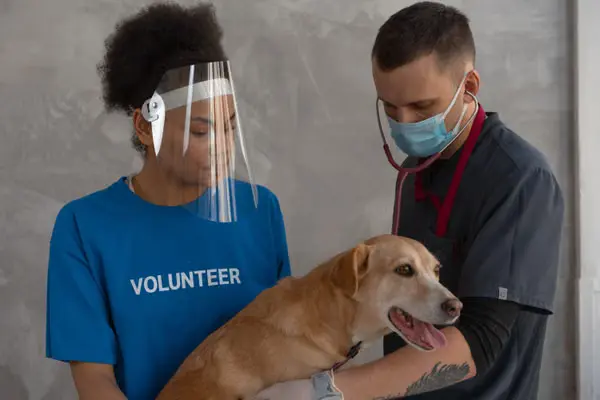

Founder
FounderDr. Maya Hartley
Chief Veterinarian · Surgery20 years in small-animal surgery. Believes every pet deserves a calm hand and a warm blanket.

Fourteen veterinarians, twenty nurses, and one shared obsession: making tails wag and purrs rumble.
Each brings a specialism, a smile, and a pocket full of treats.
Founder20 years in small-animal surgery. Believes every pet deserves a calm hand and a warm blanket.

DentalPassionate about oral health. Has been known to brush his own dog's teeth daily — yes, daily.
 Exotics
ExoticsFrom parrots to pythons, Aisha is our go-to for anything with scales, feathers, or extra legs.

EmergencyCool head in a crisis. Leads our overnight trauma team with steady hands and strong coffee.


Our team brings together experienced veterinarians, compassionate nurses, and dedicated support staff who share one simple belief: every pet deserves to feel safe, understood, and loved.
From the first hello at reception to recovery after treatment, every member of our team plays a part in creating a calmer, kinder veterinary experience.

Founder, chief surgeon, and the heart of Stackly. Maya started the clinic from her kitchen in 2009 and has never turned away a pet in need.
From the first appointment of the morning to evening recovery checks, our team is always moving with purpose.
Our team checks overnight patients, prepares treatment plans, and gets every consultation room ready for the day.
Vets meet families, perform examinations, answer questions, and create personalised care plans.
Our clinical and surgical teams work together through procedures, diagnostics, and specialised treatments.
Nurses monitor recovering pets, update families, and make sure every patient is comfortable.
The day ends with another round of patient checks, medication, comfort care, and preparation for tomorrow.
Keeps the ward running and the kittens cuddled.
Anaesthesia expert with a soft spot for bunnies.
Runs our feline-friendly fear-free programme.
Specialises in birds, reptiles, and small mammals.
Post-op comfort and rehabilitation specialist.
Night-shift anchor of our 24/7 critical care.
These principles shape how we care for pets, support families, and work together every day.
We listen before we act and treat every pet with patience, gentleness, and respect.
Veterinary medicine keeps evolving, and so do we. Knowledge helps us provide better care.
The best outcomes happen when vets, nurses, and families work together as one team.
We create calmer experiences that help pets feel safer before, during, and after treatment.

Our team members are pet parents, rescue supporters, animal advocates, lifelong learners, and people who simply believe animals deserve better.
We're always looking for kind, skilled people to join our growing family. Vets, nurses, and receptionists — there's a place for you.
"Dr. Chen remembered my cat's name, her favourite treat and her bloodwork history. That's care."
— Olivia, with Misty"Sophie the nurse called me at 11pm to say my dog was resting comfortably. Who does that? Angels."
— Raj, with Cooper"Dr. Bello treated my parrot like royalty. He's usually terrified at the vet — not here."
— Dana, with Kiwi